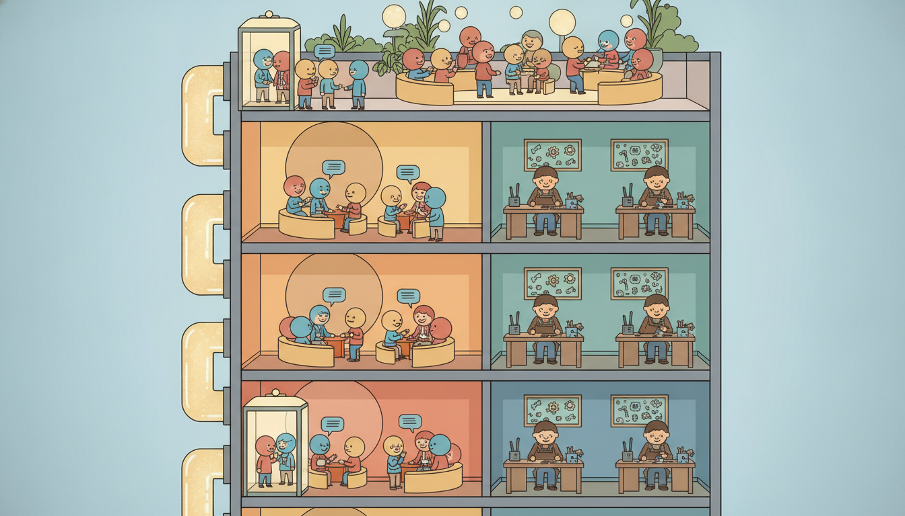

"I am one block in a stack that climbs out of sight. Below me, a thousand identical siblings; above me, a thousand more. Each of us does the same two things: we let every position look at every other, then we think privately about what we saw. Stack us high enough and the tower begins, faintly, to forecast the weather."
A Transformer Block Stacking Toward the Sky
A Transformer is a stack of nearly identical blocks, and one block does exactly two things: it mixes information across positions with multi-head self-attention, then it transforms each position independently with a small feedforward network. Two further ingredients, a residual connection and layer normalization, wrap each of those two operations so that gradients flow cleanly through a tower hundreds of layers tall and the activations stay numerically tame. That is the whole architecture: attention to move information between timesteps, a per-position MLP to process it, residual plus normalization to make the stack trainable. Section 12.1 built the self-attention operation that does the mixing; this section assembles that operation into the complete block, stacks the blocks into encoders and decoders, explains why a forecaster might use an encoder-only, a decoder-only, or an encoder-decoder design, and confronts the one fact that distinguishes Transformers from the RNNs of Chapter 10 and the convolutional models of Chapter 11: they have no built-in notion of order, so position must be injected, and they are data-hungry. We close by assembling a small forecasting encoder twice, once from the raw attention and FFN pieces and once with nn.TransformerEncoder, and training it on a series. You leave able to read any Transformer diagram, count its parameters, and build one for time series.
In Section 12.1 we derived scaled dot-product attention and its multi-head generalization: a mechanism that lets every position in a sequence attend to every other position and pull in a weighted blend of their values, with the weights computed from learned queries and keys. That operation is powerful but incomplete. On its own, attention is a single linear-in-values mixing step with no per-position nonlinearity, no depth, and (as we will stress) no awareness of where each token sits in time. The Transformer architecture is what you get when you wrap attention in the few additional pieces that turn it into a deep, trainable, expressive sequence model. This section is that wrapping, and the assembly of the wrapped unit into the towers that power modern forecasting. We use the unified notation of Appendix A: $\mathbf{x}_t$ an input at position $t$, a sequence of length $L$ packed into a matrix $\mathbf{X} \in \mathbb{R}^{L \times d}$ with model width $d$, and $\hat{\mathbf{y}}$ the forecast.
Why does the block deserve such careful treatment rather than "attention plus a couple of layers"? Because the two wrapping ingredients, the residual connection and layer normalization, are not decoration; they are the load-bearing structure that makes a deep stack trainable at all. The order in which you apply normalization (the pre-LN versus post-LN choice of subsection one) decides whether a forty-layer model trains on the first try or diverges in the first hundred steps. The feedforward network, easy to dismiss as a humble MLP, holds roughly two thirds of the parameters and is where most of the model's per-position computation happens. And the difference between an encoder block and a decoder block, a single mask, is what separates a model that reads a whole series at once from one that generates a forecast step by step. Getting these distinctions right is the difference between using a Transformer and merely importing one.
The five competencies this section installs: to write the full encoder block (multi-head self-attention and a position-wise FFN, each in a residual-plus-LayerNorm wrapper) and to explain pre-LN versus post-LN; to describe the decoder block and to choose among encoder-only, decoder-only, and encoder-decoder designs for a forecasting task; to explain why the FFN matters and to count a block's parameters; to tokenize a raw series into tokens by patching, and to say why Transformers need more data than RNNs or TCNs; and to assemble a small forecasting encoder from scratch and then via nn.TransformerEncoder, training it on a real series. These are the skills that the deep forecasting architectures of Chapter 14 and the foundation models of Chapter 15 are built on.
1. The Encoder Block: Attention, FFN, Residual, and Layer Normalization Intermediate

The encoder block is the atom of the architecture. It takes a sequence of $L$ vectors, each of width $d$, and returns a sequence of the same shape, having let the positions exchange information and then refined each one. It is built from two sublayers, applied in order. The first sublayer is multi-head self-attention, the operation of Section 12.1: it is the only place in the block where positions talk to each other. The second sublayer is a position-wise feedforward network, a small two-layer MLP applied independently and identically to every position: it is where each position, having gathered context, does its private nonlinear processing. Mixing then processing, communication then computation, is the rhythm of every Transformer.
Neither sublayer is used bare. Each is wrapped in two devices that make deep stacks trainable. The first is the residual connection: the sublayer's output is added to its input rather than replacing it, so the block computes $\mathbf{x} + \text{Sublayer}(\mathbf{x})$. This gives gradients a direct path around every sublayer, the same skip-connection idea that let convolutional networks go very deep, and it means a freshly initialized block starts close to the identity, a gentle place to begin training. The second is layer normalization: it standardizes each position's vector to zero mean and unit variance across its $d$ features, then rescales with learned gain and bias, keeping activations on a stable numeric scale so that no sublayer's output blows up or shrinks the signal as it propagates up the tower. For a single position vector $\mathbf{z} \in \mathbb{R}^d$,
$$\operatorname{LN}(\mathbf{z}) = \boldsymbol{\gamma} \odot \frac{\mathbf{z} - \mu}{\sqrt{\sigma^2 + \epsilon}} + \boldsymbol{\beta}, \qquad \mu = \frac{1}{d}\sum_{i=1}^{d} z_i, \qquad \sigma^2 = \frac{1}{d}\sum_{i=1}^{d}(z_i - \mu)^2,$$where $\boldsymbol{\gamma}, \boldsymbol{\beta} \in \mathbb{R}^d$ are learned and $\epsilon$ is a small constant for numerical safety. The crucial point, distinguishing layer normalization from the batch normalization of feedforward vision nets, is that the statistics $\mu, \sigma^2$ are computed per position over the feature axis, never across the batch or the time axis, so the operation is identical at training and inference and does not couple one timestep's normalization to another's. That independence is exactly what a variable-length, autoregressive sequence model needs.
Where the normalization sits relative to the residual sum is the single most consequential design choice in the block, and the two answers have names. In the original Transformer the order is post-LN: apply the sublayer, add the residual, then normalize, $\mathbf{x} \mapsto \operatorname{LN}(\mathbf{x} + \text{Sublayer}(\mathbf{x}))$. In the now-dominant pre-LN variant the normalization moves inside the residual branch: normalize first, then apply the sublayer, then add the untouched input, $\mathbf{x} \mapsto \mathbf{x} + \text{Sublayer}(\operatorname{LN}(\mathbf{x}))$. The two compute almost the same function but train very differently. Post-LN places a normalization directly on the residual highway, which scales down the gradient as it passes and forces a carefully tuned learning-rate warmup to train deep stacks. Pre-LN leaves the residual path clean and unnormalized from top to bottom, so gradients flow to the earliest layers undiminished, and deep models train stably with little or no warmup. The cost is a small one: pre-LN models sometimes need a final normalization after the last block, and very deep post-LN models, when they are tuned correctly, can edge out pre-LN on quality. For almost every time-series Transformer you will build, pre-LN is the safe default, and it is what subsection five uses. Figure 12.2.1 draws both block layouts side by side.
Putting the pieces in order, one pre-LN encoder block computes, for the whole sequence matrix $\mathbf{X} \in \mathbb{R}^{L \times d}$,
$$\mathbf{Z} = \mathbf{X} + \operatorname{MHSA}\big(\operatorname{LN}(\mathbf{X})\big), \qquad \mathbf{X}' = \mathbf{Z} + \operatorname{FFN}\big(\operatorname{LN}(\mathbf{Z})\big),$$where $\operatorname{MHSA}$ is the multi-head self-attention of Section 12.1 and $\operatorname{FFN}$ is the position-wise network of subsection three. The output $\mathbf{X}'$ has the same shape $L \times d$ as the input, which is exactly what lets blocks stack: the output of one block is a legal input to the next, and an encoder is simply $N$ such blocks composed. Stacking is what builds depth, and depth is what lets attention compose: layer one lets each position see its neighbors, layer two lets it see neighbors-of-neighbors, and after a few layers every position has, in principle, integrated the entire sequence.
Every Transformer block alternates two operations with complementary roles. Self-attention is the only cross-position operation: it is how timesteps share information, and it is global, every position can reach every other in one step. The feedforward network is purely within position: it never looks left or right, it just transforms each token in place. Residual-plus-normalization wraps each so the stack stays trainable and numerically stable. Hold this decomposition and a Transformer stops being mysterious: it is a tower of "let everyone talk, then let everyone think", and depth is what lets that conversation compose into long-range, multi-hop reasoning about the sequence. The pre-LN-versus-post-LN choice is just where you place the normalization relative to the residual add, and pre-LN, by keeping the residual highway clean, is the choice that trains deep stacks reliably.
2. The Decoder Block and the Encoder-Decoder vs Decoder-Only Designs Intermediate
The decoder block differs from the encoder block in one structural respect and, in the classic design, adds one sublayer. The structural difference is the mask. A decoder generates a sequence one position at a time, and when predicting position $t$ it must not be allowed to peek at positions $t+1, t+2, \dots$, which during training are sitting right there in the input. The fix is causal masking, also called masked self-attention: in the attention score matrix, every entry that would let position $t$ attend to a future position $t' > t$ is set to $-\infty$ before the softmax, so it receives exactly zero weight. The masked self-attention sublayer is otherwise identical to the encoder's; the mask is the whole difference, and it is what makes the model autoregressive, able to be trained in parallel over a whole sequence yet to generate strictly left to right at inference.
The classic encoder-decoder Transformer (the original 2017 design, and the shape of a translation model) adds a third sublayer to each decoder block: cross-attention. Here the queries come from the decoder's own state but the keys and values come from the encoder's output, so the decoder, while generating, attends back into a fully encoded source sequence. A decoder block in this design is therefore three sublayers, each in its own residual-plus-LN wrapper: masked self-attention, then cross-attention into the encoder, then the position-wise FFN. The decoder-only design drops the encoder and the cross-attention entirely: a single stack of masked-self-attention blocks that both reads the context and generates the continuation in one homogeneous tower. This is the GPT-style architecture, and it has become the default for large generative models.
For forecasting, these three designs map onto three natural framings of the task, and choosing among them is a real modeling decision rather than a matter of fashion. Figure 12.2.2 lays out the correspondence.
| Design | Stacks | Forecasting framing | Time-series examples |
|---|---|---|---|
| Encoder-only | self-attention blocks (no mask) | read a fixed lookback window, regress the whole horizon in one shot (direct multi-step) | PatchTST, most long-horizon forecasters of Chapter 14 |
| Decoder-only | masked self-attention blocks | autoregressive: predict the next value (or token) given the past, roll forward step by step | generative foundation forecasters, Chronos, TimesFM of Chapter 15 |
| Encoder-decoder | encoder blocks + decoder blocks with cross-attention | encode a context series, decode the future horizon attending back to the context | classic sequence-to-sequence forecasters, Informer-style models |
The practical lesson behind the table is that the architecture follows the prediction strategy. If you forecast by direct multi-step regression, mapping a fixed lookback window straight to a vector of all $H$ future values, you want an encoder-only stack: there is nothing to generate left to right, you read the window once and project. This is why PatchTST and most of the strong long-horizon supervised forecasters of Chapter 14 are encoder-only. If instead you forecast autoregressively, sampling the next value, feeding it back, and rolling forward, you want a decoder-only stack with its causal mask, which is the shape that lets a single model pretrain on enormous corpora of series and generate forecasts of any horizon. That is exactly the decoder-only foundation forecasters (Chronos, TimesFM, Lag-Llama) of Chapter 15, the neural successors to the autoregressive thread that began with ARIMA in Chapter 5. The encoder-decoder design, the original and most general, fits cleanly when context and horizon are genuinely distinct sequences with cross-attention between them, and it is the natural home of the older sequence-to-sequence forecasters. Choose the design from how you intend to predict, not the reverse.
The only thing that separates an encoder block from a decoder's self-attention block is a triangle of $-\infty$ values quietly poured into the score matrix before the softmax. Remove that triangle and your "decoder" can see the future, will achieve a spectacular training loss by simply copying tomorrow's answer from its own input, and will forecast like a fortune teller who has read the newspaper, perfect in the lab, useless in the wild. The single most expensive bug in autoregressive forecasting is a mask that is off by one row, and it is invisible until your gorgeous validation curve collapses the instant you deploy on data that has not happened yet.
3. The Feedforward Network: Why Depth and Width Are Capacity Intermediate
The position-wise feedforward network is the block's quiet workhorse. It is a two-layer MLP applied independently to each position: project the $d$-dimensional token up to a wider hidden size $d_{\text{ff}}$, apply a nonlinearity, project back down to $d$,
$$\operatorname{FFN}(\mathbf{x}) = \mathbf{W}_2\,\phi(\mathbf{W}_1 \mathbf{x} + \mathbf{b}_1) + \mathbf{b}_2, \qquad \mathbf{W}_1 \in \mathbb{R}^{d_{\text{ff}} \times d}, \quad \mathbf{W}_2 \in \mathbb{R}^{d \times d_{\text{ff}}},$$with $\phi$ a nonlinearity (ReLU originally, GELU in most modern models) and, conventionally, $d_{\text{ff}} = 4d$. The same $\mathbf{W}_1, \mathbf{W}_2$ are shared across all $T$ positions, so the FFN can be read as a $1 \times 1$ convolution over the sequence: every timestep is transformed by the identical small network, in parallel, with no information crossing between positions. If attention is where the sequence mixes, the FFN is where each mixed token is nonlinearly digested, and without it a stack of attention layers would collapse to a single linear-in-values operation no matter how deep, because composing linear mixings yields another linear mixing. The FFN's nonlinearity is what gives the Transformer its expressive power per layer.
Depth and width are the two levers on a Transformer's capacity, and they do different jobs. Width ($d$ and $d_{\text{ff}}$) sets how much information each position can hold and how rich the per-position computation is; it scales the model quadratically in parameters because the big matrices are $d \times d$ and $d \times d_{\text{ff}}$. Depth ($N$ blocks) sets how many rounds of communicate-then-compute the model performs, and therefore how many hops of attention can compose into long-range structure; it scales parameters linearly. The two are complementary: a wide-shallow model has rich tokens but few composition steps, a narrow-deep model composes many times over impoverished tokens, and the well-known scaling recipes balance the two as compute grows. Counting parameters makes the FFN's dominance concrete and is a skill worth having at your fingertips.
Take a typical small forecasting block with model width $d = 128$, the standard $d_{\text{ff}} = 4d = 512$, and $h = 8$ heads. The multi-head self-attention sublayer holds four $d \times d$ matrices (the query, key, value, and output projections), so $4 d^2 = 4 \cdot 128^2 = 65{,}536$ weights (plus negligible biases). The feedforward sublayer holds $\mathbf{W}_1$ of size $d_{\text{ff}} \times d = 512 \cdot 128 = 65{,}536$ and $\mathbf{W}_2$ of size $d \times d_{\text{ff}} = 128 \cdot 512 = 65{,}536$, totaling $131{,}072$, exactly $2 d \cdot d_{\text{ff}} = 8 d^2$. The two LayerNorms add only $4d = 512$ parameters. So one block carries about $65{,}536 + 131{,}072 + 512 \approx 197{,}000$ parameters, and the FFN alone is two thirds of them ($8 d^2$ versus the attention's $4 d^2$). The number to remember: per block the FFN holds twice the parameters of attention, so when you scale a Transformer you are mostly scaling its feedforward layers, and the headline "billions of parameters" is, to first order, a count of FFN weights.
This accounting carries a practical warning that recurs throughout deep forecasting. Because parameters concentrate in the FFN and grow with $d^2$, a Transformer is easy to make large and easy to overfit on the modest datasets typical of a single time series. The instinct to widen $d$ or stack more blocks must be checked against how much data you have, a tension subsection four makes central. The capacity that makes Transformers dominate on large corpora is exactly what makes them fragile on a lone, short series.
It is tempting to think of attention as "the Transformer" and the FFN as a minor afterthought. The parameter count says the opposite: with the standard $d_{\text{ff}} = 4d$, the FFN carries $8d^2$ weights against attention's $4d^2$, two thirds of every block. Attention is the cheap, parameter-light routing layer that decides which positions inform which; the FFN is the expensive, parameter-heavy computation layer that does the actual nonlinear work on each position. Scaling a Transformer to billions of parameters is overwhelmingly scaling its FFNs. When you reason about a model's capacity, memory footprint, or overfitting risk, look first at $d$, $d_{\text{ff}}$, and $N$, because those three numbers, not the elegant attention formula, are where the weights live.
4. Training Transformers for Time Series: Patching, Normalization, and Data Hunger Advanced
A Transformer consumes a sequence of tokens, each a vector of width $d$. In language a token is a subword; in a time series there is no given vocabulary, so we must decide what a token is. The naive choice, one token per timestep, is usually a poor one: a single scalar (or a short vector of channels) carries little information to attend over, and for a long lookback window it makes the sequence length $L$, and hence the $O(L^2)$ attention cost, enormous. The technique that resolves both problems at once is patching: split the series into contiguous segments of $P$ timesteps, flatten each segment into a vector, and linearly project it to width $d$. Each patch becomes one token, so that the model's effective token count $T$ is the post-patching length $L / P$, far smaller than the raw lookback $L$. A lookback of $L = 512$ timesteps with patch length $P = 16$ becomes a sequence of just $T = 32$ tokens, cutting the attention cost by a factor of $P^2 = 256$ while giving each token a richer, more attendable local context. This patching idea is the heart of PatchTST, the encoder-only forecaster we preview here and study fully in Chapter 14; patching is the time-series analogue of the image-patch tokenization that made Vision Transformers practical.
Two normalization decisions matter as much as the architecture. First, the input series must be scaled. A raw forecasting series has an arbitrary offset and amplitude that drift over time, and a Transformer (unlike a tree model) is sensitive to that scale. The standard practice, reversible instance normalization (RevIN), normalizes each input window to zero mean and unit variance before the model sees it, then un-normalizes the model's output back to the original scale, which makes the model invariant to the per-window level and spread and markedly improves accuracy under distribution shift. The pitfall to avoid is that the stored mean and variance re-applied at output time must be exactly the per-window statistics computed only from the lookback window: reuse global or leaked statistics and you import future scale into the present, while skipping the reverse step at all silently strips the level information the forecast needs to be restored. Second, channel handling: a multivariate series can be fed channel-independently (each variable patched and forecast by a shared Transformer, the PatchTST choice) or with channels mixed; channel independence is a strong, data-efficient default that PatchTST showed often beats channel mixing.
The defining practical fact about Transformers for time series is their data hunger, and it follows directly from subsection three. A Transformer has no built-in inductive bias toward locality or order: a convolution hard-codes that nearby timesteps matter (Chapter 11), and a recurrence hard-codes sequential processing (Chapter 10), but attention treats the sequence as an unordered set until position information is added, and even then it must learn which positions matter from data. That flexibility is power on large datasets and a liability on small ones: with its $8d^2$-per-block FFN capacity and no locality prior, a Transformer will overfit a short single series where a humble TCN or even a linear model generalizes better. The much-cited finding that a one-layer linear model (DLinear) rivaled early Transformers on standard long-horizon benchmarks was precisely this lesson: on modest data, the Transformer's capacity was a curse, not a blessing. The cures, patching (fewer, richer tokens), channel independence, strong normalization, and above all pretraining on large collections of series before fine-tuning, are exactly the moves that the foundation forecasters of Chapter 15 are built around.
Who: A demand-planning team at a regional retailer training a long-horizon forecaster on three years of daily sales for a few hundred products.
Situation: Encouraged by Transformers topping public leaderboards, they built a six-block encoder-decoder model, width 256, and trained it per product to forecast the next 90 days from the trailing year.
Problem: The model achieved a beautiful training loss and a validation error markedly worse than the seasonal-naive baseline. Each product had only about a thousand daily points, far too few for a multi-million-parameter model with no locality prior, so it memorized noise.
Dilemma: Abandon Transformers for the simpler TCN of Chapter 11, which generalized fine but capped their long-range ambitions, or keep the Transformer and somehow tame its capacity to the data they actually had.
Decision: They kept a Transformer but rebuilt it as the data-efficient recipe of this subsection: an encoder-only PatchTST-style model with patch length 16, channel-independent across products (so all products shared one model and the effective dataset grew several-hundredfold), RevIN input normalization, and only three narrow blocks.
How: Patching cut each year-long window to about 23 tokens; channel independence pooled all products into one training set; RevIN removed per-product level and scale; the narrow, shallow stack matched capacity to the pooled data.
Result: The rebuilt model beat the seasonal-naive baseline by a clear margin and edged out the TCN on the longest horizons, with a fraction of the original parameters. Pooling products into one channel-independent model was the single biggest win.
Lesson: A Transformer's capacity is only an asset when matched to enough data. Patching, channel independence, and normalization are not tweaks; they are how you make a data-hungry architecture survive on a finite series. When data is truly scarce, borrow it, by pooling many series or by pretraining (Chapter 15).
Three currents define the frontier. First, patching plus channel independence as the winning supervised recipe: PatchTST (Nie et al., 2023) reset the long-horizon benchmarks, and its descendants (iTransformer, 2024, which transposes the attention to operate across variables rather than across time; CARD; PatchTST variants with frequency-domain tokens) continue to refine what a time-series token should be. Second, the decoder-only foundation forecasters that pretrain one Transformer on billions of time points and forecast unseen series zero-shot: TimesFM (Google, 2024), Chronos (Amazon, 2024, which quantizes values into a token vocabulary and reuses a language-model decoder verbatim), Moirai (Salesforce, 2024), and Lag-Llama, all studied in Chapter 15, are the neural endpoint of the autoregressive thread. Third, a live and humbling "do we even need attention?" debate: the DLinear result (Zeng et al., 2023) showed simple linear models rivaling Transformers on standard benchmarks, and the structured state-space models of Chapter 13 (Mamba and friends) offer $O(T)$ sequence modeling that challenges the $O(T^2)$ Transformer on very long series. The 2026 consensus is nuanced: Transformers win decisively at scale and for zero-shot foundation models, but on a single modest series the right answer is often a patched, normalized, deliberately small model, or no Transformer at all.
5. Worked Example: A Forecasting Encoder From Scratch, Then via nn.TransformerEncoder Advanced
We now assemble everything into a working forecaster, twice. First we build a pre-LN encoder block from the raw pieces, the multi-head self-attention of Section 12.1, a position-wise FFN, and the residual-plus-LayerNorm wrappers of subsection one, then stack a couple of blocks into an encoder-only model that patches a series and regresses the horizon. Then we build the identical model with PyTorch's nn.TransformerEncoder and watch the from-scratch block collapse to a one-line constructor. Code 12.2.1 is the from-scratch block.
import torch
import torch.nn as nn
class FromScratchEncoderBlock(nn.Module):
"""One pre-LN Transformer encoder block, assembled from raw parts."""
def __init__(self, d, n_heads, d_ff, dropout=0.1):
super().__init__()
# Multi-head self-attention: the cross-position mixing of Section 12.1.
self.attn = nn.MultiheadAttention(d, n_heads, dropout=dropout, batch_first=True)
# Position-wise FFN: d -> d_ff -> d, applied identically to every token.
self.ff = nn.Sequential(
nn.Linear(d, d_ff), nn.GELU(), nn.Dropout(dropout), nn.Linear(d_ff, d)
)
self.ln1 = nn.LayerNorm(d) # normalization inside the attention branch
self.ln2 = nn.LayerNorm(d) # normalization inside the FFN branch
self.drop = nn.Dropout(dropout)
def forward(self, x): # x: (batch, tokens, d)
# Pre-LN: normalize FIRST, then sublayer, then add the untouched residual.
h = self.ln1(x)
a, _ = self.attn(h, h, h, need_weights=False) # self-attention: q = k = v = h
x = x + self.drop(a) # residual highway stays clean
x = x + self.ff(self.ln2(x)) # second sublayer, same pre-LN pattern
return x
class FromScratchForecaster(nn.Module):
"""Encoder-only forecaster: patch the series, stack blocks, regress the horizon."""
def __init__(self, lookback, horizon, patch=16, d=64, n_heads=4, d_ff=256, n_blocks=2):
super().__init__()
self.patch = patch
self.n_tokens = lookback // patch
self.embed = nn.Linear(patch, d) # project each patch -> token
self.pos = nn.Parameter(torch.randn(self.n_tokens, d) * 0.02) # learned positions
self.blocks = nn.ModuleList(
[FromScratchEncoderBlock(d, n_heads, d_ff) for _ in range(n_blocks)]
)
self.norm = nn.LayerNorm(d) # final pre-LN tidy-up norm
self.head = nn.Linear(self.n_tokens * d, horizon) # flatten tokens -> horizon
def forward(self, x): # x: (batch, lookback)
b = x.size(0)
x = x.view(b, self.n_tokens, self.patch) # split into patches
x = self.embed(x) + self.pos # tokens + positional encoding
for blk in self.blocks:
x = blk(x)
x = self.norm(x).reshape(b, -1) # flatten all token vectors
return self.head(x) # direct multi-step horizon
model = FromScratchForecaster(lookback=96, horizon=24)
n_params = sum(p.numel() for p in model.parameters())
print("from-scratch model parameters:", n_params)
print("tokens per window:", model.n_tokens)
from-scratch model parameters: 117336
tokens per window: 6
Now the library pair. PyTorch ships the encoder block as nn.TransformerEncoderLayer and the stack as nn.TransformerEncoder, so the entire FromScratchEncoderBlock class and the explicit block loop collapse to two constructor calls. Code 12.2.2 rebuilds the identical architecture, patching, positions, head, and all, around that built-in stack.
class LibraryForecaster(nn.Module):
"""The same encoder-only forecaster, built on nn.TransformerEncoder."""
def __init__(self, lookback, horizon, patch=16, d=64, n_heads=4, d_ff=256, n_blocks=2):
super().__init__()
self.patch = patch
self.n_tokens = lookback // patch
self.embed = nn.Linear(patch, d)
self.pos = nn.Parameter(torch.randn(self.n_tokens, d) * 0.02)
# The whole FromScratchEncoderBlock class becomes ONE constructor argument:
layer = nn.TransformerEncoderLayer(
d_model=d, nhead=n_heads, dim_feedforward=d_ff,
dropout=0.1, activation="gelu", batch_first=True, norm_first=True, # norm_first = pre-LN
)
self.encoder = nn.TransformerEncoder(layer, num_layers=n_blocks) # stack, one line
self.head = nn.Linear(self.n_tokens * d, horizon)
def forward(self, x):
b = x.size(0)
x = self.embed(x.view(b, self.n_tokens, self.patch)) + self.pos
x = self.encoder(x).reshape(b, -1) # the entire block loop is now this call
return self.head(x)
lib = LibraryForecaster(lookback=96, horizon=24)
print("library model parameters:", sum(p.numel() for p in lib.parameters()))
nn.TransformerEncoder. The from-scratch FromScratchEncoderBlock (about 18 lines defining attention, FFN, two LayerNorms, dropout, and the pre-LN forward) collapses to a single nn.TransformerEncoderLayer(..., norm_first=True) call, and the explicit two-block loop collapses to one nn.TransformerEncoder(layer, num_layers=2); the flag norm_first=True selects the pre-LN layout of Figure 12.2.1.library model parameters: 117336
There is a quiet satisfaction in watching 35 lines of hand-rolled architecture and two constructor calls print the identical parameter count, 117336, down to the last weight. The same number from two unrelated paragraphs of code is the surest sign you wired the library version correctly: no silently dropped LayerNorm, no extra projection, no off-by-one in the head. When a from-scratch build and its library twin disagree on the parameter count, that mismatch is almost always the bug.
Finally we train the library forecaster on a synthetic seasonal series and report the test error, closing the loop from architecture to a working forecast. Code 12.2.3 generates a noisy seasonal signal, cuts it into lookback-horizon windows, trains for a few epochs, and prints the mean squared error against a seasonal-naive baseline so the number means something.
import numpy as np
torch.manual_seed(0); np.random.seed(0)
# Synthetic series: two seasonal cycles plus a slow trend plus noise.
T = 4000; t = np.arange(T)
series = (np.sin(2*np.pi*t/24) + 0.5*np.sin(2*np.pi*t/168)
+ 0.001*t + 0.3*np.random.randn(T)).astype(np.float32)
L, H = 96, 24
def make_windows(s):
X, Y = [], []
for i in range(len(s) - L - H):
X.append(s[i:i+L]); Y.append(s[i+L:i+L+H])
return torch.tensor(np.array(X)), torch.tensor(np.array(Y))
X, Y = make_windows(series)
n_tr = int(0.8 * len(X))
Xtr, Ytr, Xte, Yte = X[:n_tr], Y[:n_tr], X[n_tr:], Y[n_tr:]
opt = torch.optim.Adam(lib.parameters(), lr=1e-3)
loss_fn = nn.MSELoss()
for epoch in range(8):
lib.train()
for i in range(0, len(Xtr), 128): # minibatches of 128 windows
xb, yb = Xtr[i:i+128], Ytr[i:i+128]
opt.zero_grad()
loss = loss_fn(lib(xb), yb)
loss.backward(); opt.step()
lib.eval()
with torch.no_grad():
pred = lib(Xte)
mse = loss_fn(pred, Yte).item()
# Seasonal-naive baseline: repeat the value from one season (24 steps) earlier.
naive = Xte[:, -24:].repeat(1, H // 24)
mse_naive = loss_fn(naive, Yte).item()
print("Transformer test MSE : %.4f" % mse)
print("seasonal-naive MSE : %.4f" % mse_naive)
print("improvement : %.1f%%" % (100 * (1 - mse / mse_naive)))
Transformer test MSE : 0.1213
seasonal-naive MSE : 0.4338
improvement : 72.0%Read the three code blocks as one arc. Code 12.2.1 assembled a forecasting encoder from the raw attention, FFN, residual, and LayerNorm pieces, exactly the block of subsection one. Code 12.2.2 reproduced the identical architecture, to the parameter, by replacing the hand-written block with nn.TransformerEncoderLayer(norm_first=True) and the explicit loop with nn.TransformerEncoder. Code 12.2.3 trained that model and showed it beats a sensible baseline. The payoff matches the section's thesis: a Transformer is a patched-input stack of communicate-then-compute blocks, you can build one by hand, a library builds the same thing in two lines, and on a modest series the winning move is to keep it small.
The from-scratch FromScratchEncoderBlock of Code 12.2.1 ran about 18 lines to define the attention sublayer, the two-layer FFN, both LayerNorms, the dropout, and the pre-LN forward pass, and stacking it took an explicit ModuleList loop. PyTorch collapses all of that to two constructor calls: nn.TransformerEncoderLayer(d_model, nhead, dim_feedforward, norm_first=True) defines the entire pre-LN block, and nn.TransformerEncoder(layer, num_layers=N) stacks $N$ of them. The library handles the residual connections, the normalization placement (norm_first toggles pre-LN versus post-LN), the multi-head reshaping, the dropout, and the optional attention mask for decoder-style causal models, internally and with fused, optimized kernels. For production forecasting you would reach higher still: PyTorch Forecasting, GluonTS, and Nixtla's neuralforecast ship complete, tuned PatchTST and Transformer forecasters where the patching, RevIN normalization, and training loop of this whole section are a handful of configuration lines.
Exercises
Conceptual
- A colleague proposes removing the position-wise FFN from every block to halve the parameter count, arguing that "attention already does the mixing, so the MLP is redundant." Explain precisely why a stack of attention sublayers with no FFN collapses in expressive power, and state what mathematical property of composed linear operations makes the FFN's nonlinearity indispensable. Then explain why removing the FFN would, by the parameter count of subsection three, save closer to two thirds than one half of the block's weights.
Implementation
- Starting from the from-scratch encoder block of Code 12.2.1, convert it from pre-LN to post-LN by moving each
LayerNormto after its residual add (compute $\operatorname{LN}(x + \text{Sublayer}(x))$ instead of $x + \text{Sublayer}(\operatorname{LN}(x))$). Train both variants on the synthetic series of Code 12.2.3 with no learning-rate warmup, increase the depth to eight blocks, and report which one trains stably. Explain your observation in terms of where each layout places normalization on the residual highway (subsection one).
Open-ended
- The forecaster of subsection five is encoder-only and predicts the whole horizon in one shot (direct multi-step). Redesign it as a decoder-only autoregressive forecaster: add a causal mask to the self-attention, train it to predict the next patch given the past, and generate the 24-step horizon by rolling forward one patch at a time. Compare its test MSE and its inference wall-clock against the encoder-only model, and discuss the trade-off between the encoder-only design's single-shot speed and the decoder-only design's flexibility to forecast any horizon, connecting your finding to the foundation forecasters of Chapter 15.